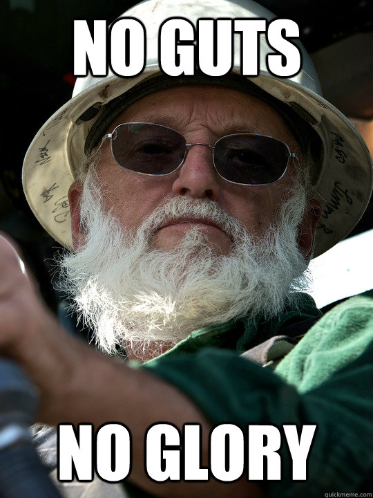

Currently, my most enjoyed subject in the realms of biology has to be communicable diseases, which includes very interesting subject of vaccination, and treating disease. I find the courage of the early virologists highly inpsiring - for example the risks Edward Jenner took when producing a cure to the deadly smallpox, by using cowpox (another disease) to provide immunity. While his ethical practises were quite roguish, his achievements in treating illnesses greatly overlook this fact.
The idea of using other illnesses to provide protection from other, more deadly ones seems ludicrous, but it was only until Jenner finally cured smallpox that the newly founded area of medicine, AKA vaccination, began taking ground. In the end, the risks taken on by Jenner have saved millions of lives, past, present, and future. The fact that one man's work has been pivotal for all of humanity inspires me greatly.
After all... 